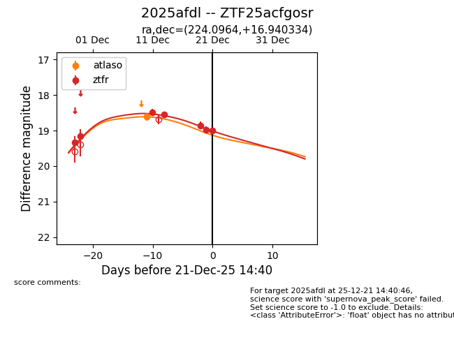
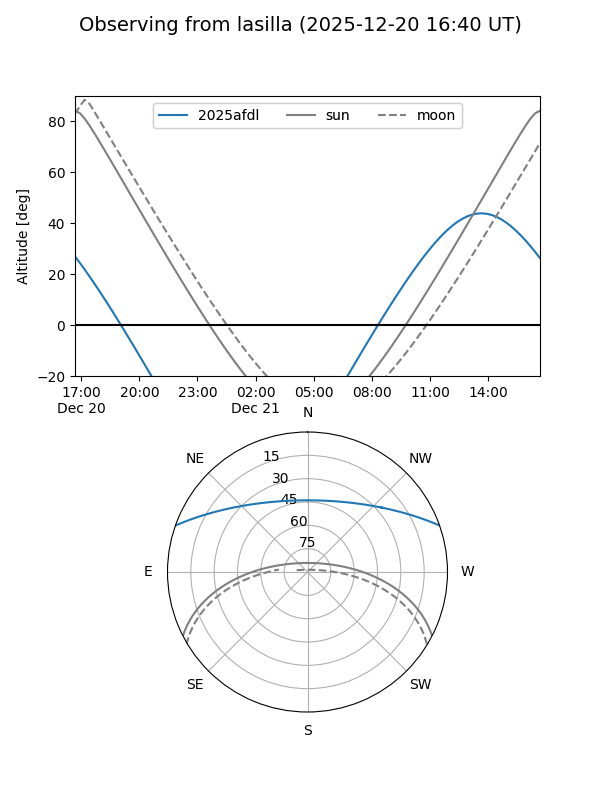
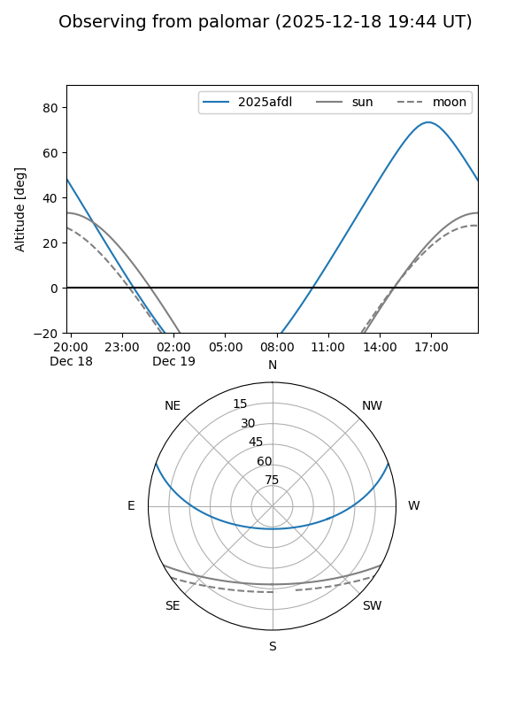
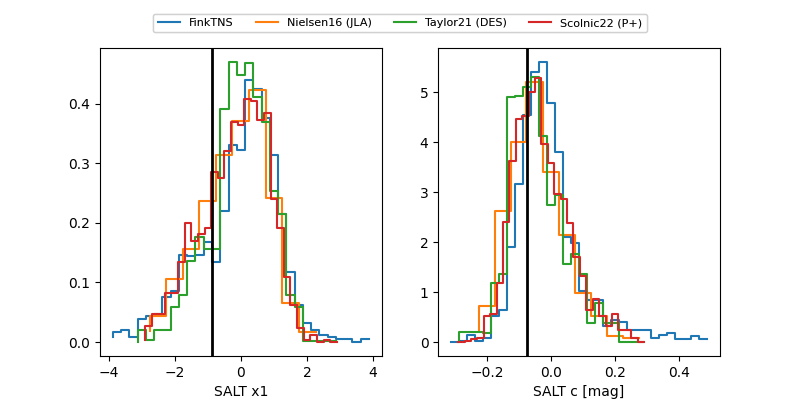

2025afdl
Target 2025afdl at 2025-12-30 16:18
Aliases and brokers:
FINK: fink-portal.org/ZTF25acfgosr
Lasair: lasair-ztf.lsst.ac.uk/objects/ZTF25acfgosr
ALeRCE: alerce.online/object/ZTF25acfgosr
TNS: wis-tns.org/object/2025afdl
YSE: ziggy.ucolick.org/yse/transient_detail/2025afdl
alt names
ZTF25acfgosr (ztf,fink_ztf)
2025afdl (tns,yse)
Coordinates:
equatorial (ra, dec) = 224.0964,+16.94033
equatorial (HMS+DMS) = 14:56:23.13,+16:56:25.20
galactic (l, b) = (20.0292,+59.40767)
Flags:
Photometry:
last atlaso=18.61, ztfr=19.29
1 atlaso, 8 ztfr detections
Lightcurve

Visibility


Additional plots
